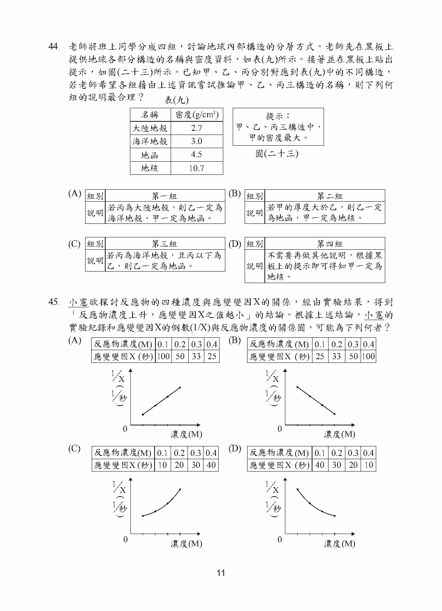
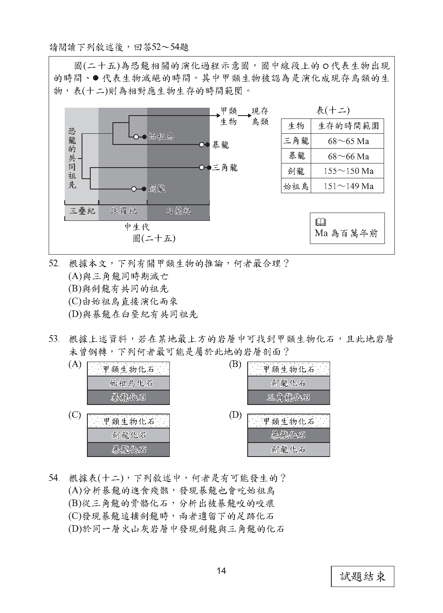

第 42 題對應：生物2-1
已知某種酵素最適合在37℃及pH＝8的環境中作用，且在pH＜5的環境下會被完全破壞。若某人吃下此種酵素，則此酵素在口腔、胃及小腸中的活性大小，下列何者最合理？
此題選項為圖形，請參閱下方官方題本頁面圖片作答。
正解 (C) 口腔接近中性(pH約7)，酵素尚有部分活性但非最適；胃液為強酸(pH約2，小於5)，酵素會被完全破壞而失去活性且不可恢復；小腸呈弱鹼性(pH約8)，但酵素在經過胃部時已被破壞，故活性仍為零。應選出口腔有活性、胃與小腸皆無活性的圖。
第 43 題對應：九上1-3
將一顆球鉛直上拋，球上升一段高度後便向下墜落。已知此地的重力加速度為9.8m/s²，若不計空氣阻力的影響，速度方向以鉛直向上為正、鉛直向下為負。下列選項中，哪一個最可能是此球運動過程的速度(v)與時間(t)關係圖？
此題選項為圖形，請參閱下方官方題本頁面圖片作答。
正解 (B) 鉛直上拋運動全程只受重力作用，加速度固定為9.8m/s²且方向向下(即為負值)，故v-t圖應為一條斜率固定為負的直線：初速為正(向上)、逐漸減為零(最高點)、再變為負值(向下加速)，斜率大小為9.8。
第 44 題對應：九上6-1
老師將班上同學分成四組，討論地球內部構造的分層方式。老師先在黑板上提供地球各部分構造的名稱與密度資料，如表(九)所示(大陸地殼2.7、地殼3.0、地函4.5、地核10.7 g/cm³)。接著並在黑板上貼出提示，如圖(二十三)所示。已知甲、乙、丙分別對應到表(九)中的不同構造，若老師希望各組藉由上述資訊嘗試推論甲、乙、丙三構造的名稱，則下列何組的說明最合理？

此題選項為圖形，請參閱下方官方題本頁面圖片作答。
正解 (C) 地球內部構造由外而內依序為地殼、地函、地核，且密度隨深度增加而變大(地核密度最大)。需依表(九)的密度數值與圖中提示(如何者密度最大)，判斷哪一組同學的推論同時符合密度大小順序與分層位置關係，其推論過程與依據最為合理。
第 45 題對應：八下4-2
小憲欲探討反應物的四種濃度與應變變因X的關係，經由實驗結果，得到「反應物濃度上升，應變變因X之值越小」的結論。根據上述結論，小憲的實驗紀錄和應變變因X的倒數(1/X)與反應物濃度的關係圖，可能為下列何者？
此題選項為圖形，請參閱下方官方題本頁面圖片作答。
正解 (A) 依結論，濃度上升時X值下降(兩者呈負相關)；若以X的倒數(1/X)為縱軸，則濃度上升時1/X會隨之增大，圖形應呈上升趨勢。應選出實驗紀錄數據確實符合「濃度愈高、X愈小」，且對應的1/X對濃度關係圖呈遞增的選項。
第 53 題對應：九上6-3
根據上述資料，若在某地最上方的岩層中可找到甲類生物化石，且此地岩層未曾倒轉，下列何者最可能是屬於此地的岩層剖面？

此題選項為圖形，請參閱下方官方題本頁面圖片作答。
正解 (D) 依地層疊置原理，未倒轉的岩層中愈上層形成愈晚(愈年輕)、愈下層愈早(愈老)。甲類生物存續至演化成現存鳥類，是四者中最晚(最年輕)者，故含甲類化石的岩層位於最上方；其下方各層所含化石的年代須依表(十二)由新到老自上而下排列，需選出符合此層序的剖面圖。